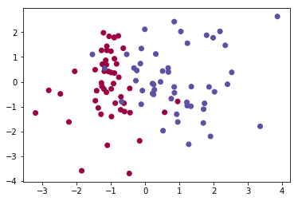
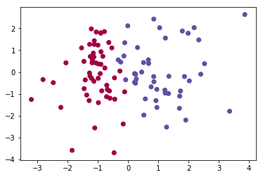
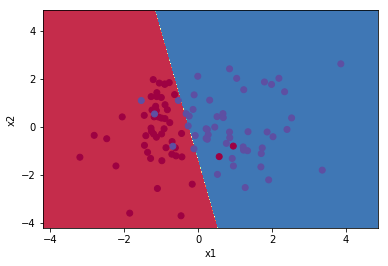
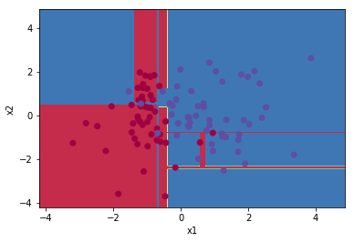

Visualizing decision boundaries
For better intuitive understanding of what a Model is doing behind the scenes, you should reach for a graphical representation of the decision boundaries if it makes sense for your data. Consider a simple True/False classifier dataset.
%pylab inline
np.random.seed(0)
from sklearn.datasets import make_classification
from sklearn.linear_model import LogisticRegression
X, y = make_classification(n_features=2, n_redundant=0)
plt.scatter(X[:, 0], X[:, 1], c=y, cmap='Spectral')Populating the interactive namespace from numpy and matplotlib
<matplotlib.collections.PathCollection at 0x1c3878333c8>

We’ll train a simple logistic regression on this data and visualize what it predicts
model = LogisticRegression()
model.fit(X, y)
preds = model.predict(X)
plt.scatter(X[:, 0], X[:, 1], c=preds, cmap=plt.cm.Spectral)<matplotlib.collections.PathCollection at 0x1c387bfd0f0>

Notice that all of the blues that were in the red are now classified as blue, and vice-versa. Is there a clear line we can trace to understand how the model predicted?
STOP
Give the write-up on contour plots another read as we’ll be leveraging np.meshgrid() pretty extensively.
Building our contour data
Like before, we need to be able to figure out the value of a function at every point in an (X, Y) space. Thus, we’ll figure out the relevant boundaries
x_min, x_max = X[:, 0].min() - 1, X[:, 0].max() + 1
y_min, y_max = X[:, 0].min() - 1, X[:, 0].max() + 1And make a meshgrid representing all of the area spanned
h = 0.01
xx, yy = np.meshgrid(np.arange(x_min, x_max, h), np.arange(y_min, y_max, h))
xx.shape(907, 907)
This step’s tricky– when our model predicts, it’s expecting data to come in as a row of two values. So using numpy to unroll and then concatenate each of our X and Y steps, we generate a prediction for each point in the X, Y space we care about.
# Predict the function value for the whole grid
Z = model.predict(np.c_[xx.ravel(), yy.ravel()])
Z = Z.reshape(xx.shape)Finally, using contourf(), we can plot this boundary neatly. Notice how the mis-classified colors pop right out!
# Plot the contour and training examples
plt.contourf(xx, yy, Z, cmap=plt.cm.Spectral)
plt.ylabel('x2')
plt.xlabel('x1')
plt.scatter(X[:, 0], X[:, 1], c=y, cmap=plt.cm.Spectral)<matplotlib.collections.PathCollection at 0x1c388c4e908>

More complicated models
That worked great for a Linear classifier, but what modifications do we need to express weird, non-linear classifiers?
from sklearn.tree import DecisionTreeClassifier
dtc = DecisionTreeClassifier()
dtc.fit(X, y)DecisionTreeClassifier(class_weight=None, criterion='gini', max_depth=None,
max_features=None, max_leaf_nodes=None,
min_impurity_decrease=0.0, min_impurity_split=None,
min_samples_leaf=1, min_samples_split=2,
min_weight_fraction_leaf=0.0, presort=False, random_state=None,
splitter='best')
None, it turns out!
x_min, x_max = X[:, 0].min() - 1, X[:, 0].max() + 1
y_min, y_max = X[:, 0].min() - 1, X[:, 0].max() + 1
h = 0.01
# Generate a grid of points with distance h between them
xx, yy = np.meshgrid(np.arange(x_min, x_max, h), np.arange(y_min, y_max, h))
# Predict the function value for the whole grid
Z = dtc.predict(np.c_[xx.ravel(), yy.ravel()])
Z = Z.reshape(xx.shape)
# Plot the contour and training examples
plt.contourf(xx, yy, Z, cmap=plt.cm.Spectral)
plt.ylabel('x2')
plt.xlabel('x1')
plt.scatter(X[:, 0], X[:, 1], c=y, cmap=plt.cm.Spectral)<matplotlib.collections.PathCollection at 0x1c388c5fef0>

As a function
def plot_decision_boundaries(model, X, y):
x_min, x_max = X[:, 0].min() - 1, X[:, 0].max() + 1
y_min, y_max = X[:, 0].min() - 1, X[:, 0].max() + 1
h = 0.01
# Generate a grid of points with distance h between them
xx, yy = np.meshgrid(np.arange(x_min, x_max, h), np.arange(y_min, y_max, h))
# Predict the function value for the whole grid
Z = dtc.predict(np.c_[xx.ravel(), yy.ravel()])
Z = Z.reshape(xx.shape)
# Plot the contour and training examples
plt.contourf(xx, yy, Z, cmap=plt.cm.Spectral)
plt.ylabel('x2')
plt.xlabel('x1')
plt.scatter(X[:, 0], X[:, 1], c=y, cmap=plt.cm.Spectral)Neat
plot_decision_boundaries(dtc, X, y)